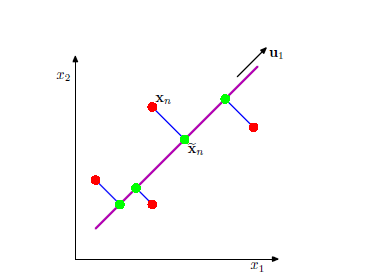
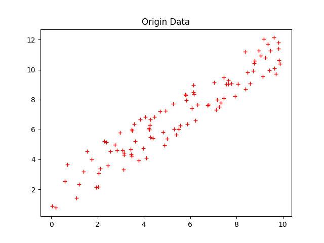
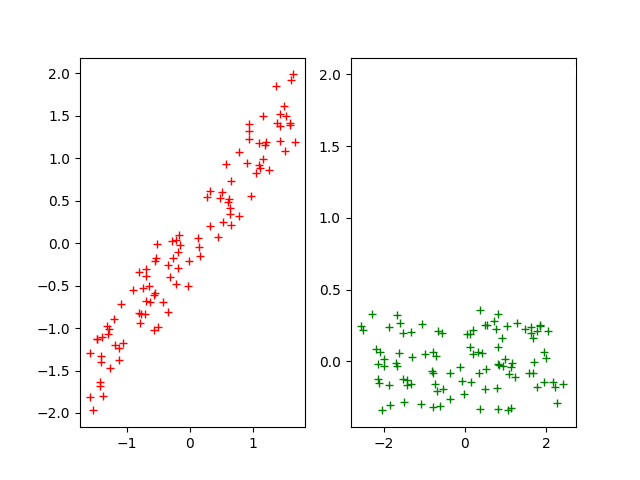
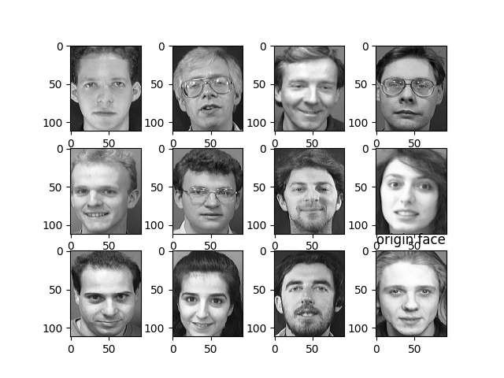
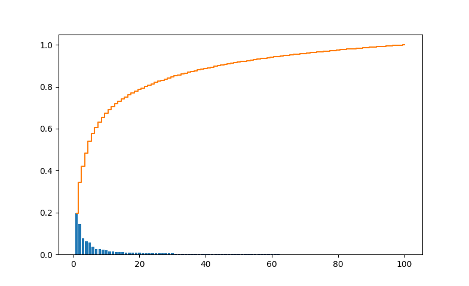
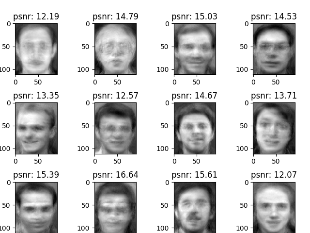

1. 降维的意义
绝大多数机器学习方法在满足密采样的情况下，都能取得出色的分类效果。但是，在现实应用中，属性维度经常成千上万，要满足密采样条件所需的样本数目是不可能达到的。而且，很多机器学习方法都需要进行距离计算，而高维空间下的距离计算往往并不是那么容易。这被称为维数灾难。缓解维数灾难的一个重要途径是降维。
降维的好处：
- 增加样本密度。舍弃部分信息之后，能使样本的采样密度变大，这是降维的重要动机。
- 去噪。当数据受到噪声影响时，最小的特征值所对应的特征向量往往与噪声有关，将他们舍弃，在一定程度上能起到去噪的效果。
- 数据可视化
- 加速计算（减少内存占用）
2. PCA降维
PCA（Principal Component Analysis) 是一种广泛使用的降维、特征提取技术。PCA主要做的就是寻找一个低维空间—主子平面(principal subspace), 将数据映射到低维空间，并且最大限度的保留数据的信息。

PCA通常可以从两个角度来分析：
最大化方差
最大化方差就是使得数据点在低维空间上的投影点之间方差最大化，图中绿色点之间的方差，也就是使得投影到低维空间的点尽可能分开。最小化误差
最小化误差就是使得数据到投影点之间的平均平方距离（称为平均投影代价）最小，图中蓝色线表示，也就是使得样本点到低维空间的距离都尽可能近。
3. 最大方差形式的推导
对于一组样本数据 ,其中 。设是一个 D 维向量的变量，首先考虑将其投影到一维空间，使用 D 维向量定义这个一维空间的方向。由于只考虑方向，可以假定 。
首先，原空间的中心点为：
投影到一维空间的后方差为：
S为协方差矩阵，定义为：
接下来的目标是最大化方差，可是得避免$||\mu_{1}|| \rightarrow{\infty}$,因此需要加上约束条件，用拉格朗日乘子法：
最大化上式，对求导，令其为零，得到：
左乘, 同时,方差为：
所以，是与最大特征值对应的特征向量。此特征向量为第一主成分。因此，现在考虑降维到M维，只需计算出对应M个最大特征值对应的特征向量就可以取得M个正交的方向向量，组成低维空间。
4. PCA算法流程
{kind=link}
5. Python 代码实现
def procHomogenization(data):
"""
数据中心化和方差归一化
:param 样本数据，以维度为列，样本为行
"""
dimension , = data[0].shape;
meanData = np.zeros(data.shape)
for i in range (dimension):
mean = np.mean(data[:,i])
std = np.std(data[:,i])
meanData[:,i] = (data[:,i] - mean) / std
return meanData
def calCovarianceMatrix(data):
m = data.shape[0];
sigma = np.dot(A.transpose(), data)
return sigma
def getEigenVector(sigma):
"""
计算特征向量阵
:return 按特征值降序排列的特征向量矩阵
"""
dimeFeatures = sigma.shape[0]
eigVal, eigVec = np.linalg.eig(sigma)
eigPairs = [(np.abs(eigVal[i]), eigVec[:,i]) for i in range(dimeFeatures)]
eigPairs.sort(reverse=True)
eigenVector =np.array([eigItem[1] for eigItem in eigPairs])
return eigenVector
def MyPCA(data, k) :
"""
定义自己PCA
:param data: 样本数据集，（n*m) n 个样本，m 维特征
:param k: 降维后的维度
:return res: 降维后的矩阵
"""
meanSample = procHomogenization(data)
sigma = calCovarianceMatrix(meanSample)
eigenVector = getEigenVector(sigma)
UReduce = getUReduce(eigenVector, k)
res = np.dot(meanSample, UReduce)
return res, UReduce
6. 数据测试
二维数据旋转
生成2维数据共100组，分布如下：

对数据进行中心化和方差归一化处理后，并进行旋转

提取一维主成分部分数据如下：array([[ 0.13579288], [-0.09891702], [ 0.75763766], [ 0.97635069], [ 0.02776545], [-0.75645382], [-1.02380704], [-0.46413714], [ 3.13828174], [ 0.50013366], [-1.48368739], [ 0.38566847], [ 0.58097642], [-0.13145981], [-1.74202934], [-1.7404379 ],人脸数据测试
选择常见的ORL人脸数据库，由剑桥大学AT&T实验室创建,包含40人共400张面部图像。
展示部分原始图像如下：

{kind=link}
{kind=link}
{kind=link}
对这四百张人脸图像进行主成分提取，将每一幅图像拉成一列，组成数据集合（112*92，400），进行主成分提取。各方差所占比例分布如下：

{kind=link}
选择30个成分进行提取后，计算出峰值信噪比，还原图像如下：

{kind=link}
可以看到，30个维度就已经保留了图像的大部分信息。
Reference
- Christopher M. Bishop etc., Pattern Recognition and Machine Learning, Springer, 2006
- 周志华, 机器学习
- 斯坦福，主成分分析
- 机器学习中的数学(4)-线性判别分析（LDA）, 主成分分析(PCA)
在博主学习过程中，参考了许多他人作品，并整理到笔记，后根据笔记作此篇文章，如文中有引用他人作品部分，还请指出，以添加说明。
请多多指教！